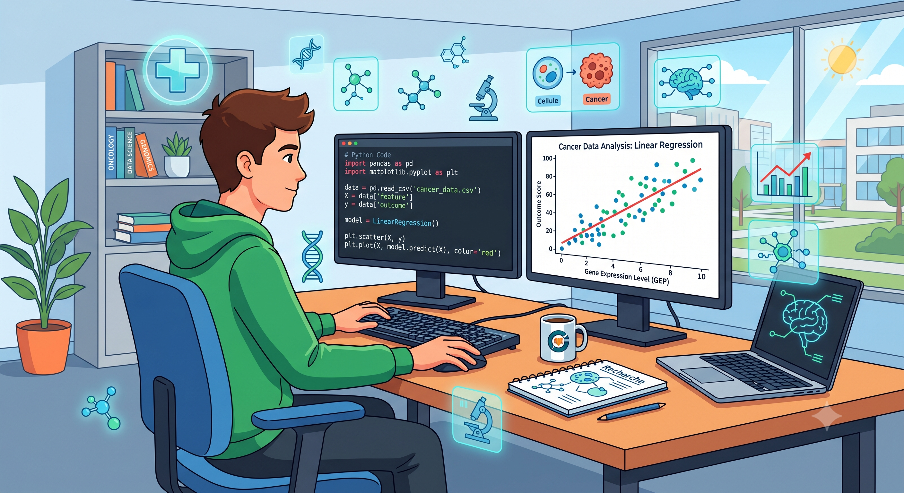
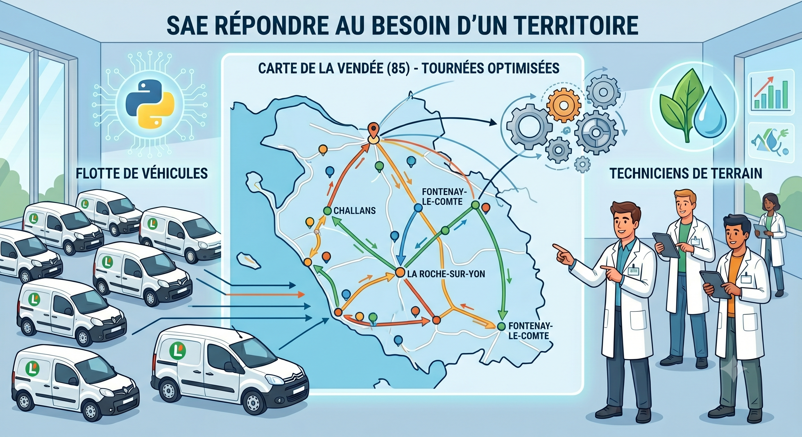

SAÉ -Prédiction Médicale
Initiation au Machine Learning (Scikit-Learn). Nettoyage de données et modélisation par régression linéaire pour prédire la taille de tumeurs cancéreuses.
Lire la suite
SAÉ - Répondre aux besoins du territoire (2)
Développement d'un module métier sans installation (API et Interface) pour optimiser l'affectation des véhicules de prélèvement du Laboratoire de l'Environnement et de l'Alimentation de la Vendée.
Lire la suite
Titre du Projet BUT 2 (3)
Description courte de ton troisième projet de deuxième année. Remplace ce texte et l'image par tes propres contenus.
Lire la suite
Titre du Projet BUT 2 (4)
Description courte de ton quatrième projet de deuxième année. Remplace ce texte et l'image par tes propres contenus.
Lire la suite
Titre du Projet BUT 2 (5)
Description courte de ton cinquième projet de deuxième année. Remplace ce texte et l'image par tes propres contenus.
Lire la suite
Titre du Projet BUT 2 (6)
Description courte de ton sixième projet de deuxième année. Remplace ce texte et l'image par tes propres contenus.
Lire la suite